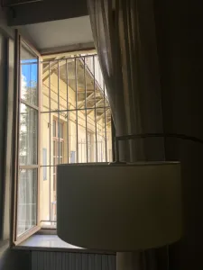
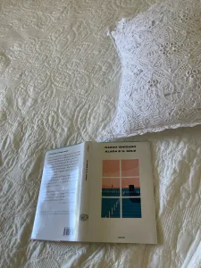
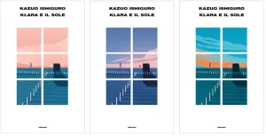
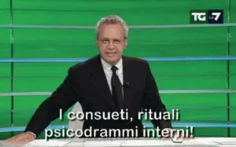
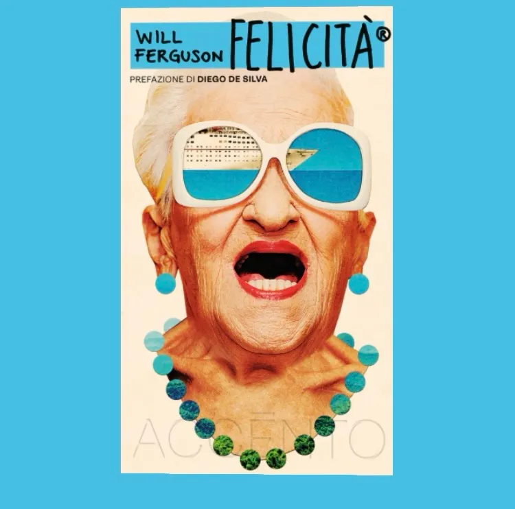

Klara e il sole, Kazuo Ishiguro, Einaudi, 2021
Home › Blog
Ammartaggio
(N.B. Questo articolo è stato scritto cinque mesi prima dell’arrivo di ChatGPT: 30 novembre 2022).
Ho letto giusto due giorni fa la conversazione tra un ingegnere di Google, Blake Lemoine, e la sua LaMDA,
un’intelligenza artificiale utilizzata per generare chatbot che interagiscono con gli utenti.
Qui trovate la reale conversazione avvenuta tra l’ingegnere e l’IA che ha tutto a che vedere con una qualsiasi interazione
che potrebbe avvenire tra voi – anche se non siete ingegneri – e una bambina di sei o nove anni molto – ma molto - intelligente.
Questo solo per dire che leggendo questa news ho provato ciò che avevo provato una settimana fa leggendo Klara e il sole.
E di nuovo: la vita è piena zeppa di coincidenze.
Non staremo qui a discutere sul futuro dell’intelligenza artificiale. Bensì per sproloquiare a proposito di questo meraviglioso
romanzo uscito
dopo il Premio Nobel di Kazuo Ishiguro. Premio donatogli perché, nei suoi romanzi di grande forza emotiva, ha svelato l’abisso
sottostante il nostro illusorio senso di connessione con il mondo.
Klara è un AA, Amico Artificiale, come molti ne hanno oggi. La cosa eccezionale, però, è che Klara non è paragonabile a
nessuno di questi nostri amici artificiali, né a nessuno dei suoi simili. Perché, a differenza
di questi nostri amici artificiali, dei suoi simili - e di molte persone che conosco -, Klara non osserva solo le cose che vede,
gli edifici fuori dalla finestra, le ombre disegnate dal sole, le espressioni,
le parole e i comportamenti umani, bensì le ascolta – cosa più unica che rara -, le registra e le analizza. Strabiliante, lo so.
Le prime pagine ti portano all’interno dell’unico mondo che ha visto fino ad allora, cioè all’interno di un negozio che - io mi
sono immaginata così - vende AA e altri robot di diverse generazioni.
Attende di essere adottata, comprata, scelta. Condizione che
può essere compresa perfettamente da alcuni, per nulla da altri, in entrambi i casi Ishiguro ti permette di immedesimarti totalmente
in lei e di provare le tipiche emozioni che si provano nella sua posizione: entusiasmo, curiosità, attesa, delusione e di nuovo
entusiasmo, curiosità, attesa e delusione. Il tutto accompagnata però da un fedelissimo amico: il Sole. Lo so che in questi
giorni pare difficile considerarlo tale - noi che viviamo vicino al Po ancor di più - ma se ci pensate è esattamente ciò che procura
spesso un amico: a volte ci acceca, ci soffoca, vorremmo sparisse, poi quando ubbidisce alla nostra richiesta ci sentiamo totalmente
indifesi,
al buio e privi di forze, allora vorremmo tornasse a farci sudare e riempire le nostre giornate di solarità – appunto – e luce.
Klara deve combattere poi un’altra delle battaglie a cui molti sono abituati: viene spostata in seconda fila, poi dietro la
vetrina, poi ancora nel magazzino, per poi essere richiamata e ritenuta degna di tornare in vetrina. E ancora. Cioè il suo valore è
nelle mani di Direttrice, ed è quest’ultima a decidere se quella settimana vale la pena darle fiducia o meno. Diciamo che la vetrina
potrebbe essere paragonata – o almeno questo è stato il mio pensiero – al lavoro, mentre Direttrice al famoso capo.
Dalla vetrina però Klara riesce a guardare i passanti, oltre che il Sole, e, come abbiamo detto, non solo ad osservarli.
Quindi comprende presto, analizzando, che i comportamenti delle persone variano a seconda della giornata, della persona con cui
stanno parlando o passeggiando, del loro bisogno di predisporre un aspetto di se stessi da mostrare ai passanti, etc. Le consuete
metamorfosi che siamo – tutti! – abituati ad utilizzare poiché ci hanno insegnato così da quando eravamo piccoli e ancora inesperti.
Fingere per compiacere o anche solo, banalmente, essere accettati.
È dalle prime pagine che ti senti travolto da questa ondata di realismo stupefacente. Sei di fronte ad una scena nuova, mai vista fino ad allora, a meno che tu sia un appassionato di "Toy Story"
e "I Love Shopping" , o ti faccia un
sacco di film mentali quando entri nei negozi, eppure non ti viene per nulla difficile immetterti nella testa di Klara e anzi
sgranare gli occhi, sentendoti piccolo piccolo di fronte a tanta consapevolezza. Klara ci conosce a memoria, non solo perché,
ripeto, tende ad analizzare tutto, ma perché uno dei suoi principali compiti è proprio quello di ricordare. Per questo viene scelta.
Perché uno dei suoi doveri è quello di memorizzare ogni minimo passo di Josie, che è malata e necessita di un amico speciale che le
legga nel pensiero prima ancora di parlare.
C’è poi anche una parentesi sull’inquinamento e la difficoltà del Sole di splendere e guarire i nostri mali,
poiché soffocato dall’eccessivo sviluppo economico. Basta osservare Melania, la domestica, che sembra avere come
unico scopo accostare le tende di Klara per impedire che il Sole la svegli. Ok, spesso ho desiderato che mia madre
non mi aprisse la finestra alle sei di mattina reputandolo sano. Eppure, altrettante volte, ho provato la sensazione
di non avere nessuno che me l’aprisse, svegliandomi già di cattivissimo umore.

Klara è amica del Sole, come abbiamo detto, ma è anche sua figlia, come tutti noi, di conseguenza ne è riconoscente e
lo tratta come si trattavano un tempo i genitori. Dunque teme di chiedergli troppo, ha paura che questo non la ascolti e che
le sue richieste d’aiuto spariscano nel nulla a causa degli errori degli umani, il più importante fra tutti: la non curanza.
Di cosa? Della natura, della Terra e del potere del Sole che può aiutarci come vendicarsi - e lo stiamo notando in questi gi... anni -. La madre di Josie è il tipico esempio di come l’uomo si dimentica di tutti gli altri, quando a preoccuparlo è un suo problema. Le difficoltà degli altri uomini – figuriamoci della Terra - si rimpiccioliscono quando ci si trova di fronte a una figlia malata, a un lavoro difficile o a un incidente personale. Non son qui per giudicare, sono la prima egoriferita del Pianeta. Son qui per constatare che i libri servono soprattutto a questo: metterci gli occhiali da vista per osservare ciò che prima guardavamo con i nostri occhi appannati.
Il tutto, comunque, condito dalla voce narrante di una bambina che, anche se artificiale e di conseguenza piuttosto intelligente,
tale rimane. Quindi ascoltiamo queste parole così profondamente vere, precise e curate, ma dal tono così dolce, innocente e gentile.

Il tema centrale è sicuramente quello dell’amicizia. Josie è amica di Klara e di Ricky, Klara è amica di Josie,
di Ricky e del Sole, Ricky è amico di Josie e di Klara, la mamma di Ricky è amica della mamma di Klara, e viceversa.
Diverse però le sfumature di amicizia e i modi con i quali questa viene espressa e considerata. Klara reputa l’amicizia
fedeltà e devozione, Josie compagnia e aiuto, Ricky confronto e comunicazione, la mamma di Ricky beneficio e conforto,
la mamma di Klara entourage e possibilità. Non c’è mai un giusto e uno sbagliato. Tocca solo scegliere quale delle tante
sfumature sentiamo più nostra e metterla in azione. Così come per l’amore. Eppure spesso ci intestardiamo nel voler ricevere
consigli, nel voler essere indirizzati, nell’imitare o paragonare questi due nostri sentimenti con quelli degli altri.
Come se ci fosse un giusto e uno sbagliato, di nuovo. Come se il mondo fosse bello perché non vario. E, soprattutto,
come se ognuno avesse gli stessi bisogni. Perciò accade, a volte, che lasciamo per strada amori o amicizie per noi fondamentali,
perché non erano simili a quelli degli altri. O, ancor di più, accade che mostriamo fotografie, post, frasi sempre tutte uguali
che dovrebbero mostrare il nostro, di amore, o la nostra, di amicizia, quindi proprio per questo unica e rara. Invece appaiono come
tanti piccoli pezzi di puzzle tutti identici, che non si incastrano per nulla – perché appunto tutti spiccicati – e soprattutto
lasciano quell’amaro in bocca che ti fa domandare se a volte, per noi esseri strambi, sia più importante mostrare che provare.
- Ma a tua madre non dispiace non avere amici?
- Ne ha, di amici. Mrs Rivers viene sempre da noi. E poi è amica di tua madre, no?
- Non era questo che intendevo. Chiunque può avere due amici, due singoli amici. Ma tua madre non ha un entourage. Nemmeno mia madre ha tanti amici. Ma ha un entourage in compenso.
- Entourage? Che parola retrograda. Cosa vuol dire?
- Vuol dire che entri in un negozio o sali su un taxi e la gente ti considera. Ti tratta bene. Avere relazioni. Importante no?
- Senti Josie, lo sai che non sempre mia madre sta bene. Non è una cosa che ha scelto, una sua decisione.
- Ma decisioni ne prende, no? Per esempio, una decisione su di te l’ha presa. All’epoca, quando è stato.
- Non capisco perché ne stiamo parlando.
- Sai cosa penso, Ricky? Dimmi se sbaglio. Penso che tua madre non abbia proceduto con te perché ti voleva tenere tutto per sé.
E adesso è troppo tardi.
L’unicità è il fil rouge del libro.
Credo di odiare Capaldi perché in cuor mio sospetto che abbia ragione.
Che quanto sostiene sia vero. Che la scienza abbia ormai dimostrato al di là di ogni dubbio
che non c’è niente di tanto unico in mia figlia, niente che i nostri strumenti moderni non sappiano portare alla luce,
copiare, trasferire. Che le persone sono vissute insieme per tutto questo tempo, per secoli ormai, amandosi e odiandosi e
sempre sulla base di un presupposto sbagliato. Una specie di credenza superstiziosa che abbiamo mantenuto in vita, per ignoranza.
Così la vede Capaldi, e una parte di me teme che possa aver ragione. Chrissie, invece, non è come me. Può darsi che ancora non lo
sappia, ma non si lascerà mai convincere. Se quel momento dovesse venire, Klara, per quanto tu possa recitare bene la sua parte,
per quanto lei possa desiderare che funzioni, Chrissie non sarà in grado di accettarlo. È troppo… all’antica. Anche sapendo di
essere in contrasto con la scienza e con la matematica, non potrà accettarlo lo stesso. A questo proprio non può arrivare.
Io sono diverso. Ho dentro una specie di… insensibilità che a lei manca. Forse perché sono un ingegnere esperto, come dici tu.
Ecco perché fatico tanto a comportarmi in modo civile con gente come Capaldi. Quando li vedo fare quel che fanno, e dire che
quel dicono, mi sembra che mi portino via quanto ho di più prezioso nella vita. Riesco a spiegarmi?
Il padre usa parole che forse non ci sembrano poi così nuove, oggi.
E, soprattutto, non viene così facile andargli contro, oggi. Eppure il libro è un inno alla battaglia:
credere nel cuore umano, nell’unicità di questo e nella non riproducibilità. Poi si sa, il cuore può smettere
di battere e necessitare di una sostituzione, può essere trattato male e desiderare di essere cambiato con quello
di qualcun altro più forte, può sembrare di perderlo o metterlo in stand by per un certo periodo. Ma il cuore rimane
il cuore, così come la scienza rimane la scienza: noiosa, rigida, insensibile, ben poco poetica, ma fondamentale.
Lungi da me, quindi, andarle contro. Lungi da me, però, considerarla la scusa per non distinguerci.
E poi c’è l’enorme parentesi del rapporto materno. Le due madri, seppure piuttosto diverse,
appaiono simili in molti atteggiamenti e, sebbene prendano decisioni opposte, giungono sempre allo stesso errore.
Reputo incredibile la verosimiglianza di queste due con molte madri che conosco, la mia prima di tutte. E reputo ancora
più sconcertante la capacità di Ishiguro di mostrarle più che credibili, con una semplicità ben poco imitabile.
Sono due donne che hanno sacrificato la loro intera esistenza per il bene dei loro figli. Peccato che questo bene, spesso,
non si sia rivelato il bene dei loro figli. Ritorniamo dunque al discorso di prima: da quand’è che abbiamo iniziato a considerare
i nostri bisogni e le nostre convinzioni uguali ai bisogni e alle convinzioni altrui? Da quand’è che abbiamo iniziato a fare del
bene a occhi chiusi, convincendoci che bastasse farlo, prima ancora di chiedere quale fosse, per l’altro, il suo bene? Quanto è
soggettivo il bene? E quanto ne fai, se non sai prima di cosa realmente necessita l’altra persona?
Per questo ho amato Klara. Perché Klara prima di ogni azione e, soprattutto parola, chiede.
Chiede come sta l’altra persona, come potrebbe agire per farla star meglio, cosa vorrebbe cambiare,
cos’è per lei sano e cos’è per lei malato. E questo vuol dire ascoltare. Vuol dire mettersi davvero a disposizione dell’altro.
Se no tanto vale vivere in solitudine.
Anche la solitudine viene trattata, con mio grande sollievo:
- Chiedo scusa. È che sono un po’ sorpresa.
- Oh. E come mai, cara?
- Beh… Francamente, sono sorpresa perché la richiesta di Miss Helen riguardo a Rick sembra molto sincera. Mi sorprende che qualcuno possa desiderare così tanto un percorso che lo lascerà solo.
- Ed è questo che ti sorprende?
- Sì. Fino a poco fa non pensavo che gli umani potessero scegliere la solitudine. Che potessero esistere a volte forze più potenti del desiderio di evitare la solitudine.
Miss Helen sorrise. - Sei proprio cara. Non lo dici apertamente, ma ho capito che cosa pensi.
L’amore di una madre per il proprio figlio. Un sentimento talmente nobile da superare il terrore della solitudine.
E può darsi che tu abbia ragione. Ma lascia che te lo dica: ci sono tanti altri buoni motivi, in una vita come la mia,
per cui uno potrebbe scegliere la solitudine. L’ho già fatta spesso questa scelta, in passato.
I ragazzi sembrano aver perso la capacità di interagire tra loro. Parlo dei ragazzi del libro eh – o forse dei nostri? -.
È per questo che vengono comprati questi AA: il fine è dare loro una compagnia – che non si è in grado di dare -,
oltre che permettere loro istruzione e ruoli professionali di alto profilo. A dimostrare forse il fatto che le
relazioni portano all’apertura e dunque a possibilità anche, e soprattutto, lavorative. Ma non deve sfuggire la
nostra facoltà di poter scegliere. Che meraviglia! Scegliere di chi contornarci, scegliere chi è nocivo e chi no,
per noi, sempre secondo la nostra prospettiva. Perché arrivare dove si vuole con chi non si vuole, ti farà rimanere
insoddisfatto esattamente come non arrivare dove si voleva arrivare. Perciò sì, la conclusione è che le relazioni sono
una gran faticaccia, ma anche uno dei pochi motivi per cui vivere su questa Terra.
P.s. Sempre per la rubrica “Appassionata di copertine etc.”
questa , è stata quella scelta - e l’unica che ho trovato al SalTo22 e
che troverete da adesso in poi -. Klara e il sole è stata un’edizione speciale di Einaudi – solite storie torinesi vincenti,
vincenti perché torinesi o torinesi perché vincenti lascio a voi l’ardua sentenza – che per l’occasione ha messo in vendita il
libro con la stessa copertina ma con tre tonalità di colore differenti che ricordano le tonalità che assume il cielo nel corso
delle diverse ore della giornata.

Avreste fatto vincere una delle altre due? Io forse sì. Ma va bè:

Continua a leggere

Tomorrow, Gabrielle Zevin, Nord, 2022
10 Maggio 2025
Alla veneranda età di 26 anni ho approcciato per la prima volta agli audiolibri come antidoto contro la noia di
camminare per andare al lavoro. Non sono il tipo che cammina per sport né per piacere. Cammino per necessità.
Leggi l’articolo

Monsieur Solitaire, 4321, Paul Auster, Einaudi, 2017
1 Settembre 2024
Cosa sarebbe stato della nostra vita se invece di quella scelta ne avessimo fatta un'altra?
Che persone saremmo oggi se quel giorno non avessimo perso il treno, se avessimo risposto al saluto di quella ragazza,
se ci fossimo iscritti a quell'altra scuola, se... Ogni vita nasconde, e protegge, dentro di sé tutte le altre che non si sono realizzate,
che sono rimaste solo potenziali...
Leggi l’articolo

Due chicche per gli amanti dei libri sui libri
1 Settembre 2024
Due libri per chi è "del mestiere", ossia due libri che potrebbero piacere maggiormente
ai rari esemplari che hanno deciso di fare il dottorato o, ancor peggio, di entrare nel mondo dell'editoria.
Leggi l’articolo